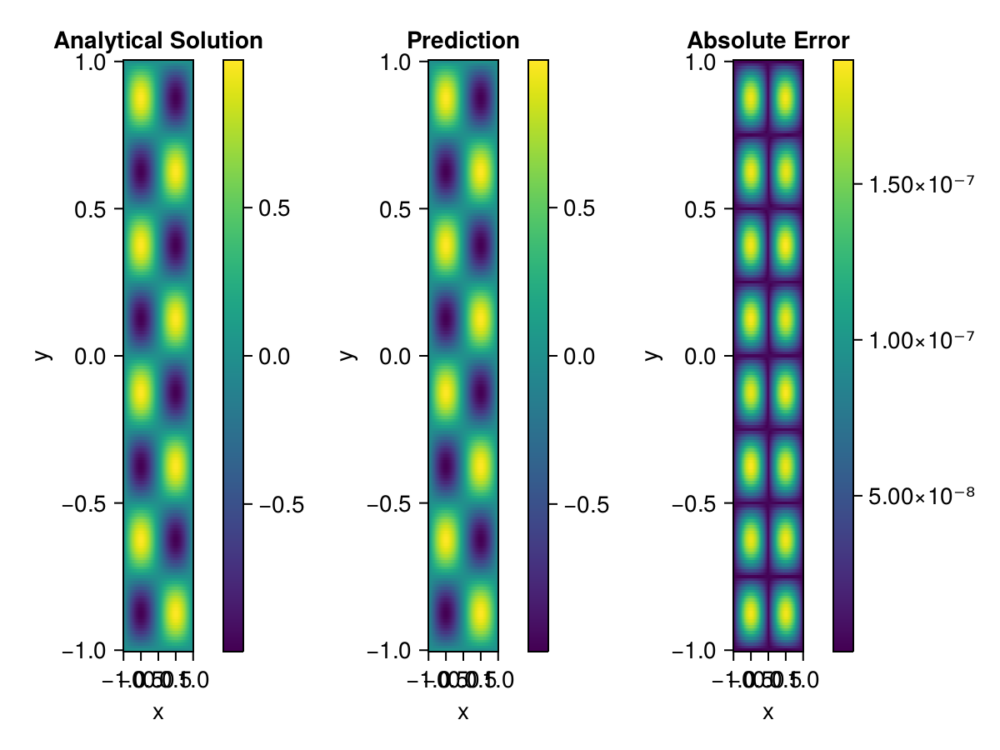

Helmholtz equation
Let us consider the Helmholtz equation in two space dimensions
\[\begin{aligned} &\Delta u(x, y)+k^{2} u(x, y)=q(x, y), \quad(x, y) \in \Omega:=(-1,1)^2 \\ &u(x, y)=0, \quad(x, y) \in \partial \Omega \end{aligned}\]
where
\[q(x, y)=-\left(a_{1} \pi\right)^{2} \sin \left(a_{1} \pi x\right) \sin \left(a_{2} \pi y\right)-\left(a_{2} \pi\right)^{2} \sin \left(a_{1} \pi x\right) \sin \left(a_{2} \pi y\right)+k^{2} \sin \left(a_{1} \pi x\right) \sin \left(a_{2} \pi y\right).\]
The excat solution is $u(x,y)=\sin{a_1\pi x}\sin{a_2\pi y}$. We chose $k=1, a_1 = 1$ and $a_2 = 4$.
using NeuralPDE, IntervalSets, Sophon, Lux, Random
using Optimization, OptimizationOptimisers
@parameters x,y
@variables u(..)
Dxx = Differential(x)^2
Dyy = Differential(y)^2
a1 = 1
a2 = 4
k = 1
q(x,y) = -(a1*π)^2 * sin(a1*π*x) * sin(a2*π*y) - (a2*π)^2 * sin(a1*π*x) * sin(a2*π*y) + k^2 * sin(a1*π*x) * sin(a2*π*y)
eq = Dxx(u(x,y)) + Dyy(u(x,y)) + k^2 * u(x,y) ~ q(x,y)
domains = [x ∈ Interval(-1,1), y ∈ Interval(-1,1)]
bcs = [u(-1,y) ~ 0, u(1,y) ~ 0, u(x, -1) ~ 0, u(x, 1) ~ 0]
@named helmholtz = PDESystem(eq, bcs, domains, [x,y], [u(x,y)])
chain = BACON(2,1; hidden_dims = 32, num_layers=5, period = 2, N = 5)
discretization = PhysicsInformedNN(chain, QuasiRandomTraining(200))
prob = discretize(helmholtz, discretization)
@time res = Optimization.solve(prob, Adam(); maxiters=3000)u: ComponentVector{Float64}(filters = (filter_1 = (bias = [-0.01107404253086659; -0.8630642458055706; … ; -0.25489299071021804; 0.3274220943369266;;]), filter_2 = (bias = [0.6519984913356747; 0.09671735068315467; … ; -0.2714827289631833; 0.751258791027094;;]), filter_3 = (bias = [-0.1637820158878904; 0.1921674233745402; … ; -0.3562564504976618; -0.2964916252691409;;]), filter_4 = (bias = [-0.6075807103531331; 0.3030051038796574; … ; -0.8717417447291212; -0.4866990552165574;;]), filter_5 = (bias = [0.8409273954404152; -0.11842736062225837; … ; 0.16908797113176574; -0.4074728020737522;;])), linear_layers = (layer_1 = (weight = [-0.13867570587052083 -0.4070334623152302 … 0.05546603853887857 -0.3406473197201966; 0.011907420558224241 -0.15646724910220192 … -0.02753492721981525 -0.3957254727024763; … ; -0.18233159157356435 -0.4014275603523331 … 0.09956328159671575 -0.1834087306578505; 0.1692172649254313 0.03297554042949749 … -0.25461563050218294 -0.11740881057388242], bias = [0.013191517208538589; -0.008350582319992302; … ; 0.04622752015009375; 0.0026683815422464834;;]), layer_2 = (weight = [0.40655543377717035 0.19051784150145779 … 0.38190802420515024 -0.1326182288423697; 0.3370973276746234 0.05041661852657877 … 0.3674726589349489 0.12237950422764331; … ; -0.18439005690922156 -0.4100080001435195 … 0.3650991031048472 0.07107034102495846; 0.051070245283155555 0.1496074350006567 … 0.0450544332441145 -0.22598875338525687], bias = [0.008247334352375095; -0.007355756091222621; … ; -0.019321181708088046; 0.0024086521376556484;;]), layer_3 = (weight = [0.3802239041375065 0.007195831194601465 … 0.23430879037004734 0.3006122261595948; -0.2755006764199608 -0.19307178041062123 … -0.061679738394080544 0.314089437848918; … ; 0.04607121447235976 -0.34006301799960587 … -0.05548524086861965 0.017381914794394722; -0.2760187149253636 0.2476856615716329 … -0.25537031425642687 -0.3634845386160346], bias = [-0.019666092552826944; -0.015276679820367648; … ; -0.006209031056248952; -0.0014553348486657407;;]), layer_4 = (weight = [-0.02631734682662651 0.44699546421873815 … 0.3054639235079381 0.19306194624561818; -0.0008326340006468342 -0.1373045602634647 … -0.150589281586953 0.024069223366404303; … ; -0.40540267958665777 -0.1403295695134383 … 0.11891404791459216 -0.04313079763400934; -0.10773852863626437 -0.3977233999109016 … -0.15077986763078943 -0.045319362886871384], bias = [0.003100925971359786; -0.001706138547940427; … ; 0.10792480341399992; 0.023944691346327537;;])), output_layer = (weight = [0.19263289301960942 0.09671574553161778 … -0.19450616550853547 -0.27875938493278135], bias = [-0.10982992645702097;;]))Let's plot the result.
phi = discretization.phi
xs, ys= [infimum(d.domain):0.01:supremum(d.domain) for d in domains]
u_analytic(x,y) = sinpi(a1*x)*sinpi(a2*y)
u_real = [u_analytic(x,y) for x in xs, y in ys]
u_pred = [sum(phi([x,y], res.u)) for x in xs, y in ys]
using CairoMakie
axis = (xlabel="x", ylabel="y", title="Analytical Solution")
fig, ax1, hm1 = heatmap(xs, ys, u_real, axis=axis)
Colorbar(fig[:, end+1], hm1)
ax2, hm2= heatmap(fig[1, end+1], xs, ys, u_pred, axis= merge(axis, (;title = "Prediction")))
Colorbar(fig[:, end+1], hm2)
ax3, hm3 = heatmap(fig[1, end+1], xs, ys, abs.(u_pred-u_real), axis= merge(axis, (;title = "Absolute Error")))
Colorbar(fig[:, end+1], hm3)